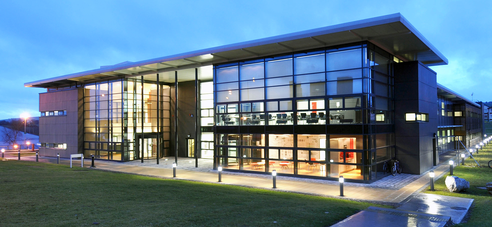

VENUE AND LOGISTICS
View Venue in a larger map
Venue
|  |
The main entrance is on Rossa Avenue.
The registration desk (your first stop) is at the ground floor foyer of Nimbus.
Signs from the entrance will indicate the location of the event.
How to reach the event location
The event venue can be reached using the local bus service: bus number 220 or 205.
If you bring a private car, there is a parking option, as shown on the map above.
Internet access
Wireless access will be available on the conference venue. Participants with an eduroam account can use it directly. Otherwise, the participants will get a wireless account at the registration desk.